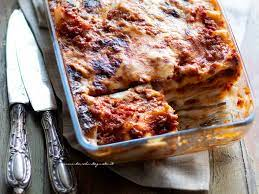

Lasagne alla Bolognese

Description
La pasta al salmone con la panna, semplicissima e veloce da preparare ma piace sempre a tutti!
Ingredients
- 380 g Pasta
- 150 g Salmone affumicato
- 70 g Panna fresca liquida
- Prezzemolo
- 1 bicchiere Whisky
- Mettete a bollire una pentola di acqua salata e buttate a cuocere la pasta.
- mettete in una padella antiaderente il wisky e il salmone tagliato a striscioline e fatelo cuocere fino a che l’alcool sarà evaporato quasi totalmente.
- Unite la panna e mescolate bene.
- Scolate la pasta al dente direttamente nella padella con il condimento, unite un paio di cucchiai di acqua di cottura della pasta e mantecate saltando la pasta nella padella per qualche secondo
- Cospargete la pasta di prezzemolo tritato e servite.